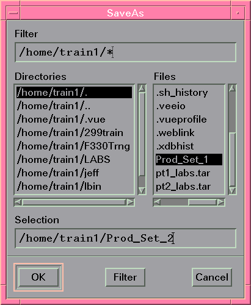

Creating Production Settings
To create new Production Settings:
- Set up the flags as required (see Accessing Testflow Settings for details).Note Additionally, you may select a report formatter to control the output to the report window produced by the testflow. The report formatter directory will also be stored in the Production Settings file.
- Choose Save as... from the File menu.
A screen similar to the figure below appears.

- Type a name in the Selection text box or select an existing one from the scroll list.
- Click OK to write the Production Settings to the specified file.